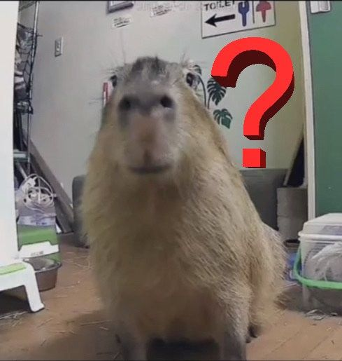
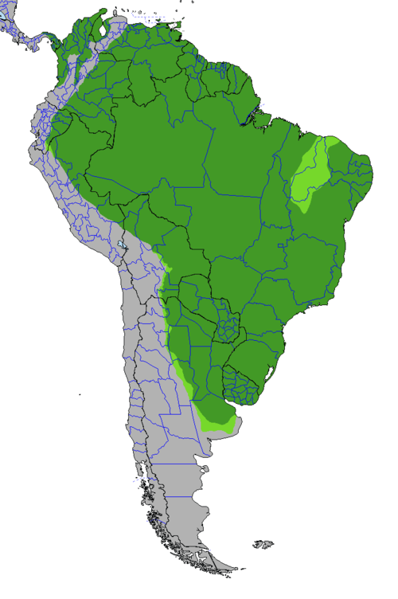

Capybaras: Happybaras
Capybaras: Happybaras
Conservation - How's the capybara doing??
... so how are they doing?
As of March 2016, The International Union for Conservation of Nature (IUCN) Red List has the capybara classified under Least Concern[1]. This means the population is considered stable, and the risk of extinction is pretty low. Capybaras have a wide population distribution spanning several countries across South America. They thrive around water, living in habitats that include forrests, savannas, wetlands, rivers and streams, and populations in most areas they exist in are generally considered healthy.
Threats to Capybaras
Natural Predators

Jaguars are the capybaras primary natural predator [2]. Other predators include anacondas and caimans for adult capybaras, as well as ocelots and harpy eagles for younger ones [3] (but don't worry too much; capybaras have ways to avoid predators in the wild!).
Climate Change
Along with many other creatures that call lush rainforests and wetlands home, climate change poses a significant threat to capybaras. The ecosystem our herbivore-dieting, water-loving capybaras depend on for survival are getting drier [4] making it more difficult to sustain foliage and to find reliable sources of water.
Humans

Humans pose a significant threat to capybaras through hunting. In addition to being hunted for their meat, capybara leather in particular is considered valuable throughout South America; poaching is an issue in countries where legislation prohibits/restricts hunting capybara [5].